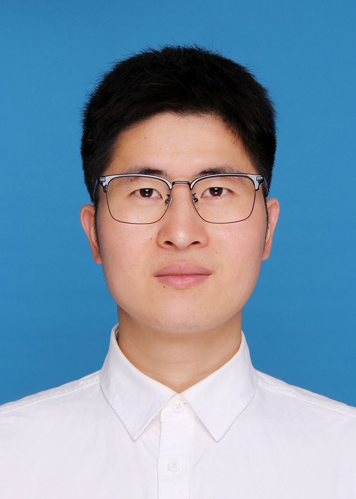

|
 |
Guohui Zhan
|
[12] Yukun Shi, Guohui Zhan*, Lijun Xu, Kun Luo, Jiangtao Liu, Zhenhua Wu*, Hongwei Liu*. Spin-dependent transport in altermagnet CrSb-based magnetic tunnel junction. Applied Physics Letters , 127, 182409 (2025).
[11] Tongshuai Zhu, Hao Ni, Dinghui Wang*, Zhilong Yang*, Guohui Zhan*, Baojun Wei. Enhancing the circular photogalvanic effect in double Weyl semimetals via symmetry breaking. Applied Physics Letters , 126, 123103 (2025).
[10] Guohui Zhan, Tongshuai Zhu, Jiaxin Yao, Kun Luo, Huaxiang Yin, Shengli Zhang, and Zhenhua Wu*. Quantum transport for the gate-length scaling limit of Si nanowire field-effect transistors based on calibrated 𝐤 ⋅𝐩 Hamiltonian parameters. Physical Review Applied, 23, 034049 (2025).
[9] Guohui Zhan, Kun Luo, Ruoran Jia, Christopher Yang, Zhenhua Wu. Quantum transport of 2D Weyl VSi2N4-based magnetic tunnel junction: a kp-NEGF study. 2023 International Conference on Simulation of Semiconductor Processes and Devices (SISPAD), Kobe, Japan, 2023, pp. 249-252.
[8] Guohui Zhan, Zhilong Yang, Kun Luo, Shengli Zhang, Zhenhua Wu. Large magnetoresistance and perfect spin inject efficiency in two-dimensional strained VSi2N4-based room temperature magnetic tunnel junction devices[J]. Physical Review Applied, 19, 014020 (2023).
[7] Guohui Zhan, Zhilong Yang, Kun Luo, Dong Zhang, Wenkai Lou, Jiangtao Liu, Zhenhua Wu, Kai Chang. Spin-dependent tunneling in 2D MnBi2Te4-based magnetic tunnel junctions[J]. MRS Bulletin, 1938,1425 (2022).
[6] Guohui Zhan, Minji Shi, Zhilong Yang, Haijun Zhang. A Programmable k·p Hamiltonian Method and Application to Magnetic Topological Insulator MnBi2Te4[J]. Chinese Physics Letters, 2021, 38(7): 077105.
[5] 占国慧, 王怀强, 张海军. 反铁磁拓扑绝缘体与轴子绝缘体——MnBi2Te4系列磁性体系的研究进展[J]. 物理, 2020, 49(12): 817-827.
[4] Meiling Xu, Guohui Zhan(Co-first author) et. al. PT-symmetry-protected Dirac states in strain-induced hidden MoS2 monolayer[J], Physical Review B, 100,235435(2019).
[3] Lian-Lian Zhang, Ze-Zhong Li, Guohui Zhan et. al. Eigenenergies and quantum transport properties in a non-Hermitian quantum-dot chain with side-coupled dots[J]. Physical Review A, 99,032119(2019).
[2] 占国慧, 于殿强, 王郅臻, 张莲莲, 公卫江. PT 对称的非厄米体系的能谱性质[J], 大学物理, 2018, 37(3).
[1] Lian-Lian Zhang, Guohui Zhan, Ze-Zhong Li et. al. Effect of PT symmetry in a parallel double-quantum-dot structure[J], Physical Review A, 96,062133(2017).